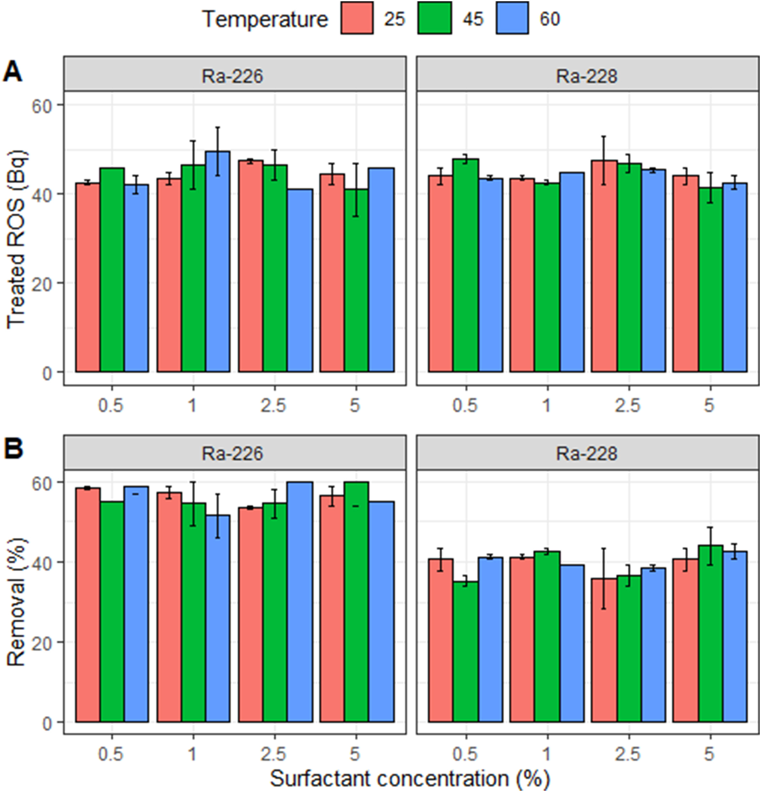
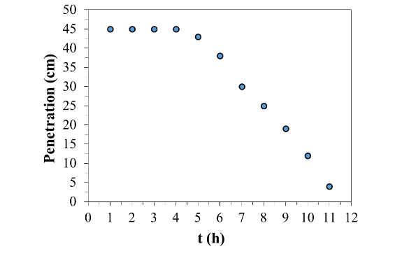

Traitement de Boues Pétrolifères Radioactives
Résumé du projet : Ce projet portait sur la réhabilitation de boues pétrolifères radioactives par des procédés d'oxydation avancée (POA), des tensioactifs et des procédés assistés par micro-ondes. L'objectif était de dégrader la fraction organique et de stabiliser les contaminants radioactifs, tout en réduisant le volume pour une élimination plus sûre.
Contributions clés :
- Développement d'un système d'ozonation pour le traitement des boues pétrolifères radioactives
- Utilisation de la spectrométrie gamma pour le suivi du processus
- Analyse du comportement des radionucliédes (Ra, Pb) pendant le traitement
Techniques utilisées : Traitement à l'ozone, pyrolyse par micro-ondes, tensioactifs, irradiation par faisceau d'électrons et spectrométrie gamma
Publications :
- Physicochemical modifications of radioactive oil sludge by ozone treatment – JECE (2020)
- Enhanced removal of radium from radioactive oil sludge using microwave irradiation and non-ionic surfactant – JPSE (2022)
- Preliminary studies on electron beam irradiation as a treatment method of radioactive oil sludge – BJRS
- Microwave Pyrolysis for Efficient Treatment of Radioactive Oil Sludge Waste: Experimental and Machine Learning Approaches (En cours d'examen)

Figure 1 : Concentration du radium et pourcentage de retrait en fonction de la concentration de tensioactif et de la température

Figure 2 : Schéma du processus, résultats FTIR et TGA du traitement par ozonation

Figure 3 : Comportement de durcissement des boues mélangées avec du ciment Portland en fonction du temps
Crédits d'image :
- Figure 1 : Adapté de Enhanced removal of radium from radioactive oil sludge using microwave irradiation and non-ionic surfactant, Journal of Petroleum Science and Engineering (2022).
- Figure 2 : Adapté de Physicochemical modifications of radioactive oil sludge by ozone treatment, Journal of Environmental Chemical Engineering (2020).
- Figure 3 : Adapté de Preliminary studies on electron beam irradiation as a treatment method of radioactive oil sludge, Brazilian Journal of Radiation Sciences (2020).